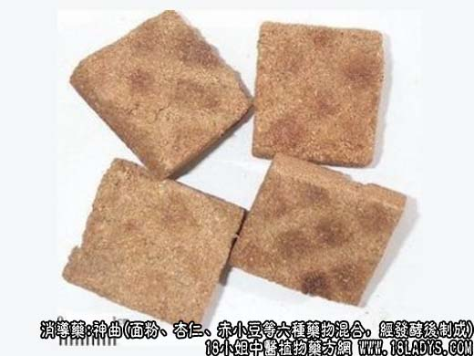

神曲为常用中药。始载《药性论》。《本草纲目》列入谷部，李时珍谓“昔人用曲，多是造酒之曲，后医乃造神曲，专以供药，力更胜之。
别名：六神曲、六曲。
来源：神曲是用面粉、杏仁、赤小豆等六种药物混合，经发酵后加工制成。
产地：全国各地均有生产。
处方：面粉75公斤、赤小豆3公斤、去皮杏仁3公斤、鲜辣蓼0.75公斤、鲜青蒿0.75公斤、鲜苍耳秧0.75公斤（用鲜嫩枝叶，去掉粗枝）。
制法：1、先取面粉与杏仁混合，用石碾轧细过罗待用。
2、取赤小豆粉碎成粗末，加水熬煮成粥。
3、取鲜辣蓼、鲜青蒿、鲜苍耳秧，洗净切细段，加水煮烂，连同上药晾冷，共入搅拌机内，搅拌均匀，如水不足可增加适量的温开水，反复搅拌至成颗粒状。取出，置容器中，使之发酵（约48小时），发酵后揉坨，切成一厘米左右的小块，晒干即得。
性状鉴别：呈不规则的小块，表面黄白色，略平滑。质较坚硬，断面粗糙，微显白色菌丝。有发酵气，味酸微甘。
主要成分：含淀粉酶、酵母菌、乙种维生素闻、挥发油、甙类物质。
药理作用：消食行气，健脾止泻、解表，可视为一种酶性助消化药，有健胃作用。
炮制：生用或妙焦、炒黄用。
性味：辛、甘、温。
归经：入脾、胃经。
功能：行气消食，健脾开胃。
主治：食积不消，胃纳不佳。
临床应用：1、用于健胃，治消化不良，属于寒滞者更适宜，有食欲不振、饮食积滞、胸腹胀满者常用之，配山楂、麦芽、党参、白术、方如健脾丸。
2、用于健脾，治脾虚泄泻（常伴消化不良），配白术、陈皮、砂仁等。
3、用于解表，治感冒而表现有伤食腹泻者（可见于胃肠型流行性感冒），配解表药。此外，神曲还可加入由金石药品组成之丸齐中，以增强胃力而助消化吸收（例如磁朱丸）。
使用注意：1、积滞而表现有胃火炽旺、舌绛无津者，不宜用神曲。此时由于阴津消耗，应先生津、清热，用甘寒、清凉之品，如竹茹、布渣叶、淮山药、天花粉之类。而神曲辛温，性味较燥，虽能消滞，但在此情况下恐其助阳，故仍不宜用；
2、胃酸过多者用神曲后有泛酸、嗳酸倾向，故不宜用。
用量：9~15g。
处方举例：健脾丸：神曲9g，山楂9g，麦芽12g，陈皮6g，党参6g，白术9g，枳实6g，水煎服。
注：福建尚产健胃曲（别名建曲、建神曲、范志曲、万应曲）。是用豆谷及其他多种药物混合加工，印压成块，发酵而成。干燥后呈扁长形方块，长6厘米，宽4.5厘米，厚2厘米。表面灰白色，有霉斑及虫蛀痕。体轻显疏松，断面粗糙，灰黄色至灰褐色，有草质纤维，气清香，味微苦。效用略同神曲，兼治伤风感冒，暑温痢疾。